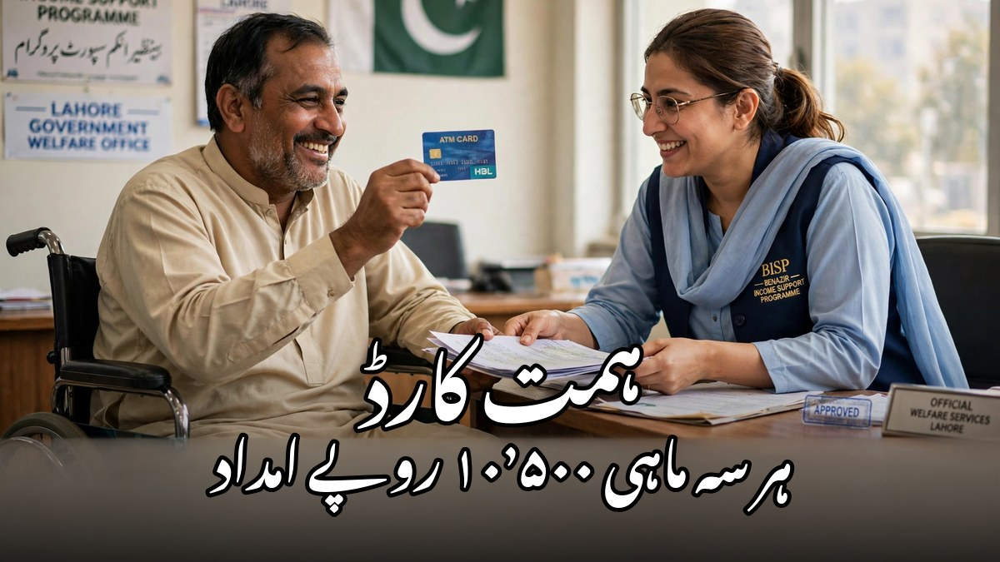

ہمت کارڈ 2026: معذور افراد کے لیے 10,500 روپے سہ ماہی امداد — مکمل اردو گائیڈ

پنجاب حکومت کا ہمت کارڈ ان افراد کے لیے ایک بڑی سہولت ہے جو معذوری کی وجہ سے کام نہیں کر سکتے۔ اس کارڈ کے ذریعے اہل افراد کو ہر تین ماہ بعد 10,500 روپے ملتے ہیں، یعنی سال میں 42,000 روپے۔ یہ رقم بینک آف پنجاب کے اے ٹی ایم کارڈ کے ذریعے دی جاتی ہے تاکہ مستحق شخص عزت کے ساتھ اپنی ضرورت پوری کر سکے۔ اس مضمون میں ہمت کارڈ کی اہلیت، رجسٹریشن، اسٹیٹس چیک کرنے اور رقم نکالنے کا مکمل طریقہ آسان اردو میں بتایا گیا ہے۔
1۔ ہمت کارڈ کیا ہے اور یہ کس کے لیے ہے؟
ہمت کارڈ پنجاب کے محکمہ سوشل ویلفیئر اینڈ بیت المال کی اسکیم ہے، جو وزیراعلیٰ پنجاب کی ہدایت پر شروع کی گئی۔ اس کا مقصد ان معذور افراد کی مالی مدد کرنا ہے جن کی معذوری انہیں کام کرنے سے روکتی ہے۔ یہ عام معذوری الاؤنس نہیں — یہ خاص طور پر ان لوگوں کے لیے ہے جنہیں ڈسٹرکٹ معذوری بورڈ نے کام کے لیے نااہل قرار دیا ہو۔ کارڈ کا سارا ریکارڈ ڈی پی ایم آئی ایس یعنی ڈس ایبلڈ پرسنز مینجمنٹ انفارمیشن سسٹم میں رکھا جاتا ہے، اور اسی نظام سے اہل افراد کو منتخب کیا جاتا ہے۔
2۔ کتنی رقم ملتی ہے اور کیسے ملتی ہے؟
ہر منظور شدہ کارڈ ہولڈر کو ہر سہ ماہی 10,500 روپے ملتے ہیں، جو ماہانہ تقریباً 3,500 روپے بنتے ہیں۔ رقم بینک آف پنجاب کے جاری کردہ اے ٹی ایم کارڈ پر ہر تین ماہ بعد ڈالی جاتی ہے، اور کارڈ ہولڈر اسے کسی بھی بینک آف پنجاب کے اے ٹی ایم سے نکال سکتا ہے۔ اب تک دو مرحلوں میں 65,000 کارڈ جاری ہو چکے ہیں، اور حکومت کا ہدف اہل افراد کی تعداد کو بڑھا کر تقریباً 85,000 تک لے جانا ہے۔
3۔ اہلیت کی شرائط — کون درخواست دے سکتا ہے؟
ہمت کارڈ ہر معذور شخص کو نہیں ملتا — اس کے لیے چھ شرائط پوری کرنا ضروری ہیں۔ پہلی شرط یہ ہے کہ آپ پنجاب کے رہائشی ہوں اور آپ کا شناختی کارڈ پنجاب سے بنا ہو۔ دوسری شرط یہ ہے کہ آپ کے پاس محکمہ سوشل ویلفیئر پنجاب کا جاری کردہ معذوری سرٹیفکیٹ ہو۔ تیسری شرط یہ ہے کہ ڈسٹرکٹ معذوری بورڈ نے آپ کو کام کے لیے نااہل قرار دیا ہو۔ چوتھی شرط یہ ہے کہ آپ کے گھرانے کا غربت اسکور یعنی پی ایم ٹی اسکور 45 یا اس سے کم ہو۔ پانچویں شرط یہ ہے کہ آپ کہیں ملازمت نہ کرتے ہوں۔ چھٹی اور آخری شرط یہ ہے کہ آپ پہلے سے بی آئی ایس پی، زکوٰۃ یا پنجاب سوشل پروٹیکشن اتھارٹی سے کوئی مالی امداد نہ لے رہے ہوں۔ اگر ان میں سے کوئی ایک شرط بھی پوری نہ ہو تو کارڈ نہیں ملے گا۔
4۔ رجسٹریشن کا طریقہ — کوئی الگ فارم نہیں
ہمت کارڈ کی سب سے اہم بات یہ ہے کہ اس کا کوئی الگ درخواست فارم نہیں ہوتا۔ آپ کو صرف اپنی معذوری کی رجسٹریشن مکمل کرانی ہے، اور محکمہ آپ کے ریکارڈ سے اہل افراد کو خود منتخب کرتا ہے۔ اگر آپ کے پاس معذوری سرٹیفکیٹ نہیں ہے تو پہلے اپنے ضلع کے سوشل ویلفیئر دفتر جائیں اور ڈسٹرکٹ معذوری بورڈ سے معائنہ کروائیں — بورڈ کی سفارش پر آپ کو سرٹیفکیٹ جاری ہوگا۔ اس کے بعد ڈی پی ایم آئی ایس پورٹل یعنی dpmis.punjab.gov.pk پر اپنا ریکارڈ بنوائیں یا اپ ڈیٹ کریں — اس کے لیے معذور شخص کا اپنا شناختی کارڈ یا بچوں کے لیے ب فارم، درست پتہ اور موبائل نمبر درکار ہوتا ہے۔ رجسٹریشن پر کوئی آخری تاریخ نہیں۔
5۔ اپنا اسٹیٹس آن لائن کیسے چیک کریں؟
اپنا اسٹیٹس چیک کرنے کے لیے ڈی پی ایم آئی ایس پورٹل کا تصدیقی صفحہ کھولیں: dpmis.punjab.gov.pk/himmatcard-verification — وہاں معذور شخص کا 13 ہندسوں والا شناختی کارڈ نمبر بغیر ڈیش کے درج کریں۔ یاد رکھیں کہ سرپرست یا والدین کا شناختی کارڈ نمبر نہیں، بلکہ خود معذور شخص کا نمبر درج کرنا ہے۔ اسٹیٹس سے پتا چلتا ہے کہ آپ کا ریکارڈ منظور ہوا ہے یا نہیں، کارڈ جاری ہوا ہے یا نہیں، اور قسط کی رقم کارڈ میں آئی ہے یا نہیں۔ اگر اسٹیٹس میں کوئی غلطی نظر آئے، جیسے نام کی املا یا پتہ غلط ہو، تو فوراً ضلعی سوشل ویلفیئر دفتر جا کر ریکارڈ درست کروائیں — غلط ریکارڈ کی وجہ سے کارڈ روکا جا سکتا ہے۔
6۔ کارڈ کیسے ملے گا اور رقم کیسے نکالیں؟
جب آپ کا ریکارڈ منظور ہو جاتا ہے تو محکمہ پہلے آئیں پہلے پائیں کی بنیاد پر کارڈ جاری کرتا ہے۔ کارڈ آپ کو ضلعی سوشل ویلفیئر دفتر یا بینک آف پنجاب کی نامزد شاخ سے ملتا ہے، اور ساتھ ہی کارڈ کا پن کوڈ بھی دیا جاتا ہے۔ کارڈ ملنے کے بعد آپ ہر سہ ماہی کی رقم کسی بھی بینک آف پنجاب کے اے ٹی ایم سے نکال سکتے ہیں۔ پن کوڈ کسی کو نہ بتائیں اور کارڈ گم ہونے کی صورت میں فوراً بینک اور سوشل ویلفیئر دفتر کو اطلاع دیں۔ اگر کارڈ جاری ہونے کے بعد بھی قسط نہ آئے تو پہلے پورٹل پر اسٹیٹس چیک کریں، پھر 1312 ہیلپ لائن پر رابطہ کریں۔
7۔ ہمت کارڈ اور بی آئی ایس پی میں کیا فرق ہے؟
بہت سے لوگ ہمت کارڈ کو بی آئی ایس پی سے ملا دیتے ہیں، حالانکہ دونوں الگ اسکیمیں ہیں۔ بی آئی ایس پی پورے پاکستان کے غریب گھرانوں کے لیے ہے اور اس کی قسط اکتوبر تا دسمبر 2026 کے لیے 14,500 روپے سہ ماہی ہے۔ ہمت کارڈ صرف پنجاب کے لیے ہے، صرف معذور اور کام کے لیے نااہل افراد کے لیے ہے، اور اس کی قسط 10,500 روپے سہ ماہی ہے۔ سب سے اہم فرق یہ ہے کہ ایک ہی شخص دونوں اسکیموں سے فائدہ نہیں اٹھا سکتا — اگر آپ بی آئی ایس پی کی امداد لے رہے ہیں تو ہمت کارڈ نہیں ملے گا۔
8۔ عام سوالات اور جوابات
کیا بچے بھی ہمت کارڈ لے سکتے ہیں؟ جی ہاں — نابالغ معذور بچوں کے لیے والدین یا سرپرست درخواست دے سکتے ہیں، مگر ریکارڈ بچے کے ب فارم پر بنے گا۔ کیا رجسٹریشن یا کارڈ کی کوئی فیس ہے؟ نہیں — رجسٹریشن، سرٹیفکیٹ اور کارڈ مکمل طور پر مفت ہیں۔ اگر میرا پی ایم ٹی اسکور 45 سے زیادہ ہے تو کیا کروں؟ تو آپ اس اسکیم کے اہل نہیں ہیں — محکمہ سوشل ویلفیئر سے دیگر امدادی پروگراموں کے بارے میں معلومات لے سکتے ہیں۔ نئے کارڈ کب جاری ہوں گے؟ اگلے بیچ کی کوئی سرکاری تاریخ ابھی اعلان نہیں ہوئی — تصدیقی صفحہ اور 1312 ہیلپ لائن سے تازہ معلومات ملتی رہیں گی۔ کیا ہمت کارڈ کی رقم ہر ماہ ملتی ہے؟ نہیں — رقم ہر تین ماہ بعد ایک ساتھ 10,500 روپے ملتی ہے۔
اگر آپ یا آپ کے خاندان میں کوئی معذور فرد ہے جو کام نہیں کر سکتا، تو آج ہی اس کا ریکارڈ چیک کریں — سرٹیفکیٹ اور ڈی پی ایم آئی ایس رجسٹریشن مکمل کروانا ہی کارڈ تک پہنچنے کا راستہ ہے۔ یہ مضمون اپنے ان رشتہ داروں اور دوستوں کے ساتھ ضرور شیئر کریں جنہیں اس معلومات کی ضرورت ہو سکتی ہے۔